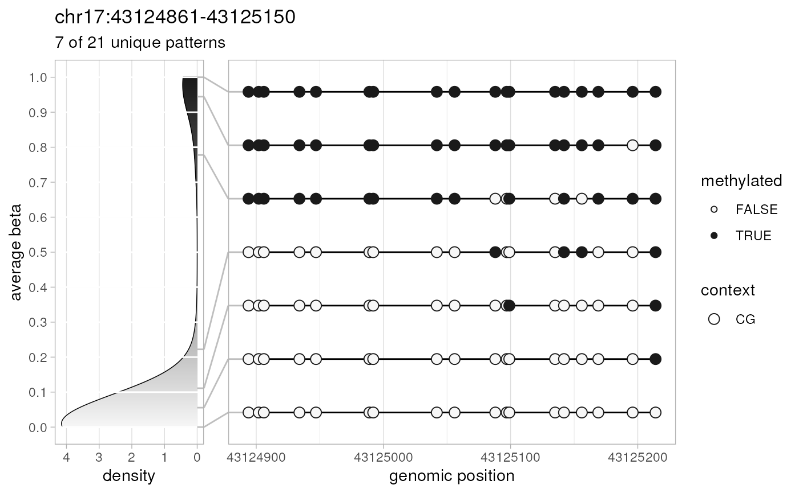
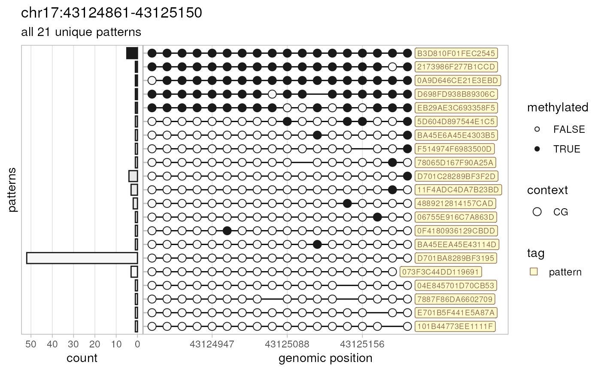

This convenience function plots methylation patterns (epialleles) previously
extracted by extractPatterns.
Usage
plotPatterns(
patterns,
order.by = c("beta", "count"),
beta.range = c(0, 1),
bin.context = c("CG", "CHG", "CHH", "CxG", "CX"),
nbins = 10,
npatterns.per.bin = 2,
plot.context = c("CG", "CHG", "CHH", "CxG", "CX"),
genomic.scale = c("continuous", "discrete"),
breaks = "auto",
marginal = c("density", "count"),
marginal.position = c("left", "right"),
marginal.transform = c("identity", "log10"),
marginal.limits = NULL,
marginal.size = 0.25,
...,
tag = c("none", "count", "beta", "pattern"),
tag.size = 2.5,
tag.colour = "#87654c",
tag.fill = "lemonchiffon",
title = TRUE,
subtitle = TRUE,
context.size = c(1, 2, 3),
base.size = 3,
methylation.fill = c("grey97", "grey10"),
plot = TRUE,
verbose = TRUE
)Arguments
- patterns
output of
preprocessBamfunction (methylation patterns as adata.tableobject).- order.by
string defining order of patterns on the plot (default order by: "beta").
- beta.range
numeric vector of length 2 for the range of average pattern beta values represented on the plot (default: [0;1]).
- bin.context
string defining cytosine methylation context used to calculate average beta value of a pattern that is further used to assign patterns to bins:
"CG" (the default) – CpG cytosines (called as zZ)
"CHG" – CHG cytosines (xX)
"CHH" – CHH cytosines (hH)
"CxG" – CG and CHG cytosines (zZxX)
"CX" – all cytosines
- nbins
a single integer defining the number of bins (i.e., intervals within `beta.range`). Default: 10.
- npatterns.per.bin
integer vector for the number of the most abundant patterns selected from each bin (default: 2). When of length 1, the same number of patterns will be taken. When of length `nbins`, allows to fine-tune the number of selected patterns from each bin. Setting to `Inf` effectively results in plotting all patterns.
- plot.context
string defining methylation context of cytosines included in the plot (default: "CG"; for the range of available values, see `bin.context` above).
- genomic.scale
string for the type of genomic position scale of the plot: either "continuous" (the default) or "discrete".
- breaks
a vector of breaks for the genomic position scale of the plot. If "auto" (the default), breaks for continuous scale are computed by the default ggplot2 routines, while breaks for discrete scale are a subset of plotted positions selected using
pretty. Possible values:ggplot2::waiver()for ggplot2 defaults, integer vector of breaks for continuous scale, or character vector of breaks for discrete scale.- marginal
string for the type of marginal plot: either "density" (probability density of average beta values of all patterns; the default) or "count" (counts of plotted patterns). "none" is not implemented yet; create an issue if interested.
- marginal.position
string for the position of marginal plot: either "left" (the default) or "right" (not implemented yet; create an issue if interested).
- marginal.transform
string for the transformation of marginal scale (default: "identity"). Check
ggplot2::scale_x_continuous()for more details.- marginal.limits
limits of marginal scale (default: NULL). Check
ggplot2::scale_x_continuous()for more details.- marginal.size
numeric in range (0;1) for the relative width of the marginal plot (default: 0.25).
- ...
additional arguments passed to
stats::density()call used in marginal density plot. Possible value:adjust=0.25.- tag
string for optional tagging of patterns with their count ("count"), average beta value ("beta"), or pattern ID ("pattern"). Default: "none".
- tag.size
numeric for the font size of the tag text (in millimetres; default: 2.5).
- tag.colour
string for the colour of of the tag text. Default: "#87654c".
- tag.fill
string for the colour of of the tag background. Default: "lemonchiffon".
- title
the title of the plot. When `TRUE` (the default), a genomic region from which patterns were extracted. Other possible values: anything that can be converted to string, or `NULL` for no title.
- subtitle
the subtitle of the plot. When `TRUE` (the default), a number of patterns plotted. Other possible values: anything that can be converted to string, or `NULL` for no subtitle.
- context.size
a numeric vector with sizes of circles representing cytosines within each of three contexts: CHH, CHG, and CG (default: c(1, 2, 3)).
- base.size
numeric for the font size of the text for highlighted bases (in millimetres; default: 3).
- methylation.fill
a vector of length 2 for colours representing unmethylated and methylated cytosines, respectively. These colours are also mapped to the lowest (0) and highest (1) possible beta values to represent average beta values of methylation patterns and create a gradient fill of a marginal density plot. Default: c("grey97", "grey10").
- plot
boolean. If `TRUE` (the default), patterns are plotted, and the selected ones are silently returned as a
data.tableobject. If `FALSE`, thegrob tableobject is returned instead.- verbose
boolean to report basic info on input and output.
Value
the plot and (silently) the data.table
object containing plotted methylation patterns (if `plot==TRUE`),
or grob table object (if `plot==FALSE`).
Details
As the number of methylation patterns can be quite large, by default, the function plots the most abundant unique patterns only. The complete logic is as follows:
from the input methylation patterns, all unique patterns are extracted and counted
unique patterns are split in bins by their average beta value
most abundant unique methylation patterns from each bin are plotted and silently returned
On the resulting plot, each cytosine is shown as a circle, where the size of that circle represents cytosine context and the fill encodes methylation status. If available, highlighted bases are shown as labels of different colours.
See also
extractPatterns for extracting methylation patterns,
preprocessBam for preloading BAM data,
generateCytosineReport for methylation statistics at the level
of individual cytosines, generateBedReport for genomic
region-based statistics, generateVcfReport for evaluating
epiallele-SNV associations, generateBedEcdf for analysing the
distribution of per-read beta values, and `epialleleR` vignettes for the
description of usage and sample data.
Examples
# amplicon data
amplicon.bam <- system.file("extdata", "amplicon010meth.bam",
package="epialleleR")
custom.range <- as("chr17:43124861-43125150", "GRanges")
# let's get our patterns
patterns <- extractPatterns(bam=amplicon.bam, bed=custom.range)
#> Checking BAM file:
#> short-read, paired-end, name-sorted alignment detected
#> Reading paired-end BAM file
#> [0.005s]
#> Extracting methylation patterns
#> [0.013s]
# default plot + silently returned plotted patterns
selected.patterns <- plotPatterns(patterns)
#> 84 patterns supplied
#> 21 unique
#> 7 most frequent unique patterns were selected for plotting using 10 beta value bins:
#> [0,0.1) [0.1,0.2) [0.2,0.3) [0.3,0.4) [0.4,0.5) [0.5,0.6) [0.6,0.7) [0.7,0.8) [0.8,0.9) [0.9,1]
#> 2 1 1 0 0 0 0 1 0 2

# all unique patterns with their counts as a margin, categorical positions,
# tagged with pattern IDs, returned as a `gtable` object
tbl <- plotPatterns(patterns, npatterns.per.bin=Inf, marginal="count",
genomic.scale="discrete", tag="pattern", plot=FALSE)
#> 84 patterns supplied
#> 21 unique
#> 21 most frequent unique patterns were selected for plotting using 10 beta value bins:
#> [0,0.1) [0.1,0.2) [0.2,0.3) [0.3,0.4) [0.4,0.5) [0.5,0.6) [0.6,0.7) [0.7,0.8) [0.8,0.9) [0.9,1]
#> 14 1 1 0 0 0 0 1 0 4
# which can be plotted later
grid::grid.newpage()
grid::grid.draw(tbl)
